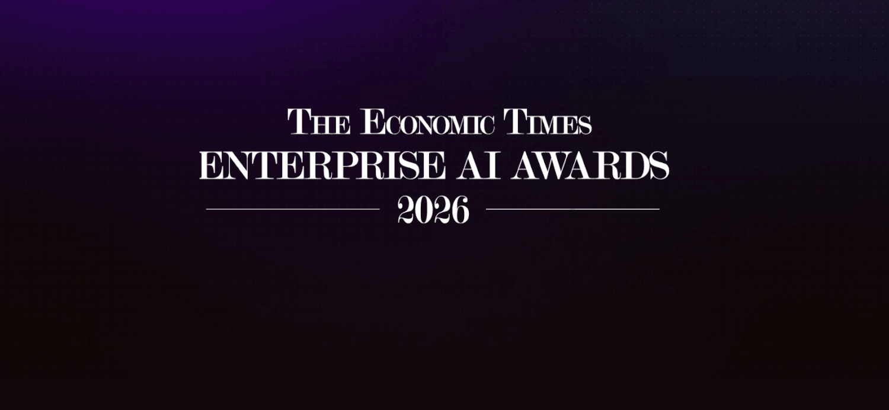
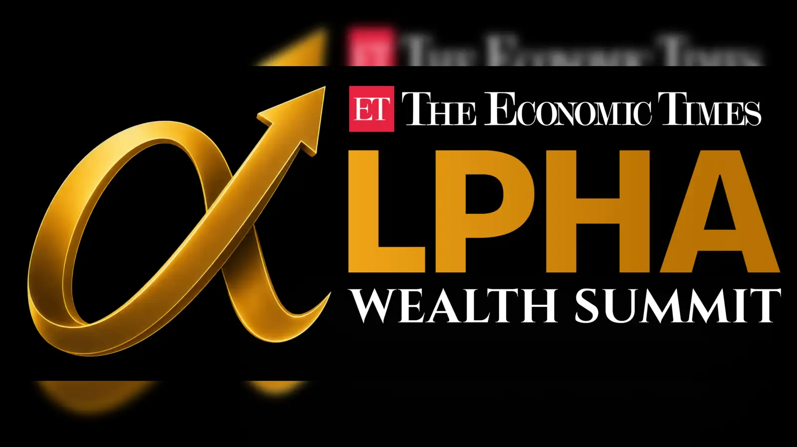
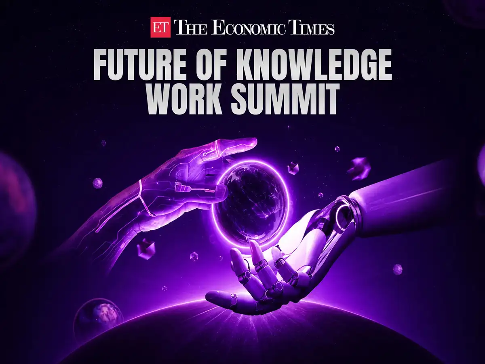

Annotation - Top Bar & Navigation
+Annotation - Section 1: Hero · Most Critical Panel
+Four jobs above the fold
Promise: Headline states the competitive outcome in 7 words — no product category, no AI cliché. Credibility: Subheadline grounds intelligence in ET's access to India's top executives. Price: ₹9,999/year shown immediately — signals confidence, filters low-intent visitors, anchors the rest of the page. ₹833/month gives executives the budget frame they think in. CTA: Variant-specific — Org Leaders get "Take the Lead," Career Accelerators get "Start My Monthly Briefing."
ET AI Edge distills how India's top executives are using AI and gives you an action plan to apply it to your work, with a ready-to-present output for your next leadership meeting.
ET AI Edge gives ambitious professionals a monthly AI briefing - with a ready-to-present output for your next leadership conversation, so your AI work is visible, not just real.
Annotation - Section 3: The Product
+The product
ET AI Edge combines intelligence from India's senior business leaders with a structured workflow built for your role - so you don't just know what's happening with AI, you know what to do about it.
Each month covers a real AI deployment from an Indian business leader - Finance, Marketing, HR, or Legal. So you always know where others are, and where you stand.
"Board materials prep: 3 days to 4 hours."
41% of Finance professionals at your level have at least one AI workflow in their planning cycle.
Each briefing includes a structured workflow tied to a real task in your role - so the intelligence from India's top leaders doesn't stay interesting, it becomes something you can run with immediately.
"Next campaign review - use this month's analysis framework instead of building the summary from scratch."
Every briefing ends with a ready-to-present output - what you learned, what you applied, and what comes next. Something concrete to show at your next leadership conversation.
After 3 months, your Scorecard begins tracking your AI history. After 3 quarters, your organisational AI record lives inside ET AI Edge - a compounding professional asset that stays with you, not a vendor.
Annotation - Section 4: ET's Unfair Advantage
+The unfair advantage
The intelligence in ET AI Edge comes directly from Finance Directors, HR Heads, and Marketing VPs running AI deployments at Indian companies - not aggregated from international studies or recycled consulting decks.
That access becomes the India AI Benchmark - the only cross-function dataset tracking how Indian executives are deploying AI, at what cost, with what outcomes. No equivalent dataset exists in India.



Annotation - Section 5: Proof
+What this looks like in practice
Not a consulting report. Not an imported case study. Every metric comes from an actual operating environment.
"Our FP&A cycle ran 11 days. After three Monthly Briefing cycles, we've standardised two AI workflows that cut variance analysis to 4 days. The AI status slide I now present at every board review took 20 minutes to build - not 3 hours."
"I've run the Monthly Briefing three times. The AI Transformation Scorecard gave me something specific to present at my annual review. My VP called it the most organised AI work she'd seen from any of her managers."
Annotation - Section 6: Value Stack
+Your monthly structure
Not a course syllabus. A monthly operating structure - built around your existing management calendar.
Annotation - Section 7: Pricing
+Pricing
Annual billing only. The briefing cycle begins Month 1.
Senior leadership? ET AI Circle is a curated C-suite peer cohort at ₹29,999/year - for Directors and above.
Annotation - Section 8: FAQ + Final CTA
+Your AI Scorecard baseline starts Month 1
The next cycle opens June 2026. Joining mid-cycle means your Scorecard starts behind peers who joined at cycle open.
Join ET AI Edge - ₹9,999/yearAnnual billing · Cancel before renewal · Not a course